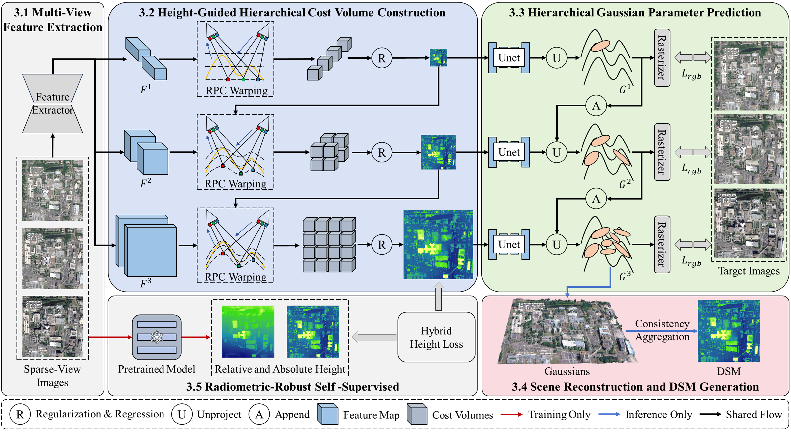
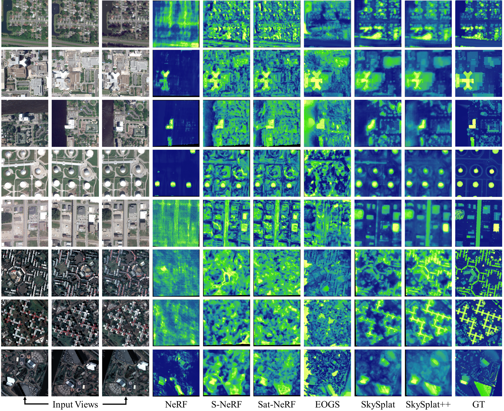

Abstract. Scene reconstruction from sparse-view satellite images remains challenging due to insufficient geometric constraints. SkySplat++ extends our previous 3DGS method, refining Gaussian representations in a coarse-to-fine manner for robust large-scale structure and fine textures. Height-guided hierarchical cost volumes and hybrid height supervision improve accuracy, achieving significant speedup and lower MAE compared to baselines.

